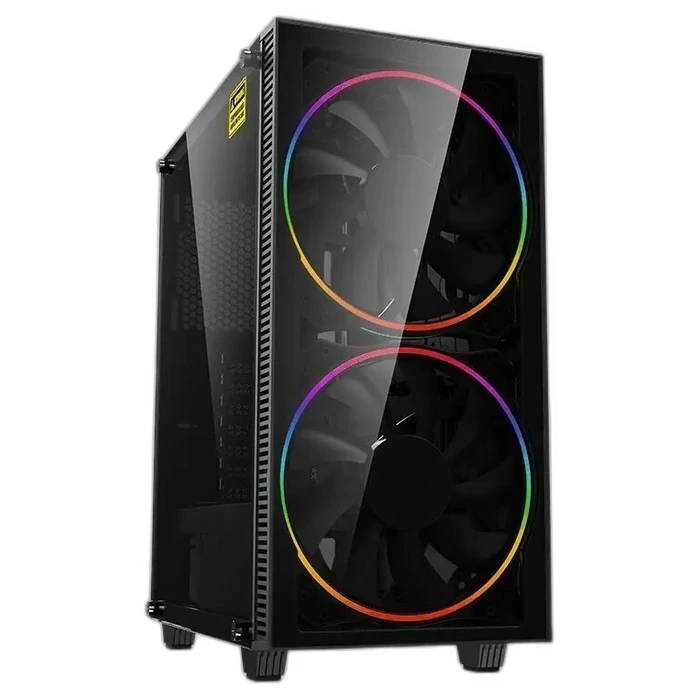

Produse
Carcasa adăpostește componentele, determină dimensiunea sistemului și direcția fluxului de aer. La selecție se verifică formatul plăcii de bază suportat, spațiul liber pentru placă video și pentru cooler, ventilatoarele incluse și spațiul pentru radiatoarele de răcire cu lichid. Modelele cu panouri din sticlă temperată prezintă componentele, iar panourile frontale din plasă metalică favorizează ventilarea. Specificațiile sunt cele indicate de producători.
GameMax

GameMax Nova N6
Specificații tehnice: GameMax Nova N6
| Format |
Mid Tower (ATX) |
| Plăci suportate |
ATX, micro ATX, mini ITX |
| Panouri |
Sticlă temperată lateral, bandă ARGB integrată |
| Ventilatoare incluse |
1 × 120 mm ARGB (spate) |
| Spațiu placă video |
Până la 360 mm |
| Spațiu cooler |
Până la 156 mm |
| Radiator |
Față până la 240 mm |
| Conectori |
USB 3.0 |
| Dimensiuni (Î × L × A) |
437 × 200 × 430 mm |
| Greutate |
4,0 kg |

GameMax Black Hole
Specificații tehnice: GameMax Black Hole
| Format |
Mid Tower (ATX) |
| Plăci suportate |
ATX, micro ATX |
| Panouri |
Sticlă temperată |
| Ventilatoare incluse |
2 × 200 mm ARGB (față) + 1 × 120 mm ARGB (spate) |
| Spațiu placă video |
Până la 340 mm |
| Spațiu cooler |
Până la 170 mm |
| Conectori |
USB 3.0 |
| Dimensiuni (Î × L × A) |
464 × 210 × 415 mm |
| Greutate |
5,85 kg |

GameMax Draco XD
Specificații tehnice: GameMax Draco XD
| Format |
Mid Tower (ATX) |
| Plăci suportate |
ATX, micro ATX, mini ITX |
| Panouri |
Sticlă temperată |
| Ventilatoare incluse |
3 × 120 mm ARGB cu inel dublu (față) + 1 × 120 mm ARGB (spate) |
| Spațiu placă video |
Până la 340 mm |
| Spațiu cooler |
Până la 170 mm |
| Radiatoare |
Față 240/280 mm, spate 120 mm |
| Conectori |
USB 3.0 |
| Dimensiuni (Î × L × A) |
467 × 213 × 428 mm |
| Greutate |
5,5 kg |

GameMax Storm BK
Specificații tehnice: GameMax Storm BK
| Format |
Micro-ATX |
| Plăci suportate |
micro ATX, mini ITX |
| Panouri |
Sticlă temperată lateral, frontal din plasă metalică |
| Ventilatoare incluse |
1 × 120 mm FRGB (față) |
| Spațiu placă video |
Până la 320 mm |
| Spațiu cooler |
Până la 155 mm |
| Radiatoare |
Sus 240 mm, spate 120 mm |
| Conectori |
USB 3.0, USB 2.0, audio |
| Ventilatoare maxim |
6 × 120 mm |
Chieftec și DeepCool

Chieftec Visio GM-30B-TG-OP
Specificații tehnice: Chieftec Visio GM-30B-TG-OP
| Format |
Dual-chamber (ATX) |
| Plăci suportate |
ATX, micro ATX, mini ITX |
| Panouri |
Sticlă temperată față și lateral |
| Ventilatoare incluse |
6 × 120 mm ARGB, cu hub pentru sincronizare |
| Spațiu placă video |
Până la 410 mm |
| Spațiu cooler |
Până la 175 mm |
| Montaj |
Compatibilă cu plăci de bază back-connect |
| Dimensiuni (Î × L × A) |
390 × 295 × 430 mm |
| Greutate |
7,3 kg |

DeepCool CG530 4F
Specificații tehnice: DeepCool CG530 4F
| Format |
Mid Tower panoramic (ATX) |
| Plăci suportate |
ATX, micro ATX, mini ITX |
| Panouri |
Patru fețe din sticlă temperată, fără stâlp frontal |
| Ventilatoare incluse |
4 × 120 mm ARGB PWM |
| Spațiu placă video |
Până la 410 mm |
| Spațiu cooler |
Până la 160 mm |
| Radiatoare |
Până la 360 mm |
| Sursă |
ATX, până la 210 mm |
| Stocare |
2 × 3,5 inci + 2 × 2,5 inci |
| Dimensiuni (Î × L × A) |
399 × 285 × 440 mm |